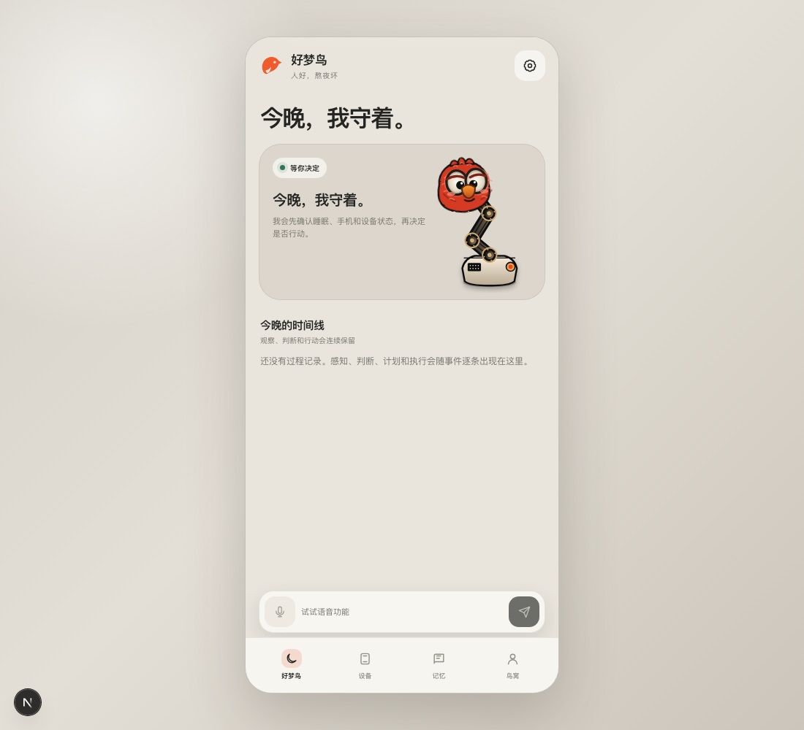
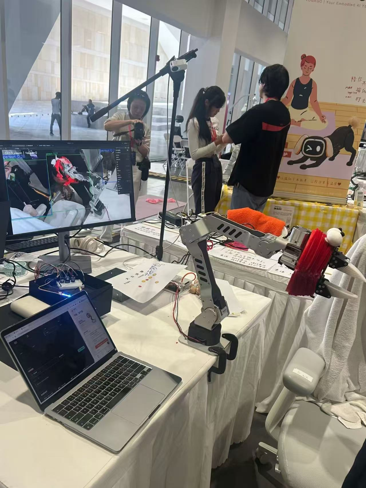
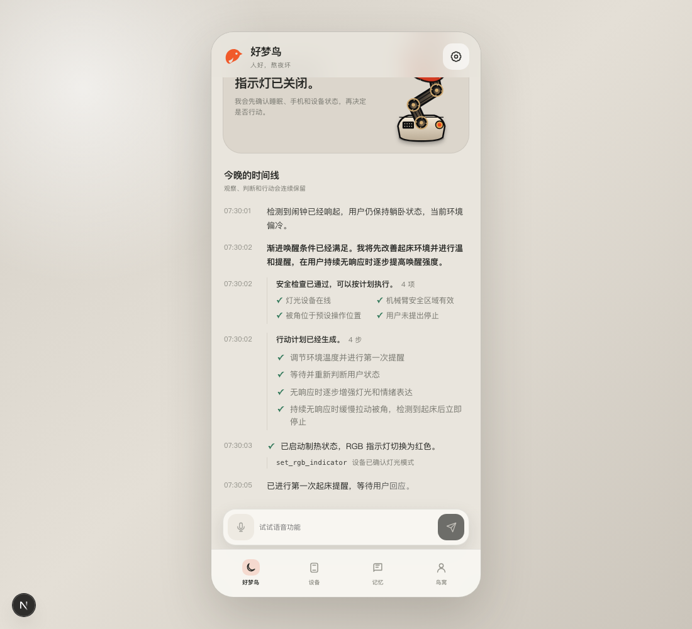

A陪伴首页：让用户先知道它在做什么
角色、状态标签与一句话说明共同表达“等待、准备、执行或完成”，把系统状态转成用户能理解的陪伴语言。底部导航将今晚、设备、记忆与鸟窝分开。

 EN
EN02 / EMBODIED AGENT
围绕睡前到晨间的五个照顾场景，将 App 交互、Agent 决策与六轴机械臂执行连接起来。
Overview
好梦鸟探索具身睡眠 Agent：让软件不止发出提醒，还能通过设备执行照顾动作，并将执行结果带回产品。

The Problem
睡眠 App 只能提醒，不能真的替用户做事。
Interaction & Design
我主导定位与 PRD，规划五个睡眠照顾场景，完成 App 交互、五种角色状态动效与产品形象，并推进软硬件联调。下面按实际页面呈现交互设计。
项目采用单一手机界面。以下保留原版正常比例的页面截图，按实际使用流程排列；点击可查看完整截图。
角色、状态标签与一句话说明共同表达“等待、准备、执行或完成”，把系统状态转成用户能理解的陪伴语言。底部导航将今晚、设备、记忆与鸟窝分开。

使用仓库自带的“渐进唤醒”调试场景，前台通过事件流依次呈现观察、条件成立、安全检查、行动计划与工具回执。过程和结果保留在同一条时间线上。


列表先展示设备与可用状态，点击箭头再展开能力说明。将“可用”“离线”“未开放”分别表达，避免把功能入口当成设备已经可以执行的承诺。

偏好不只是一句结论，还展示来源，并提供编辑、删除与新增入口。这样用户可以纠正系统对自己的理解。

实际点击切换到“安静”，再关闭摄像头；页面同步改变当前模式、解释文案与开关状态。主动程度与设备权限是两项独立选择。

The System
安全校验不通过即停止并回执；设备回执回到感知，形成闭环。
Outcomes
六轴机械臂、MQTT 与传感器联调跑通，交付含物理执行与设备回执的可运行 Demo。